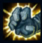
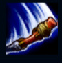
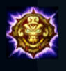
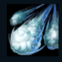
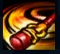

Wukong
| Wukong The Monkey King | |
|---|---|
| Release date | 26.07.2011 |
| Class | Diver |
| Positions | Top,Jungle |
| Resource | Mana |
| Range type | Melee |
| Adaptive type | Physical |
| Base statistics | |||
| Health | 540 – 1985 | Mana | 300 – 1405 |
| Health regen. | 4 – 15.05 |
Mana regen. | 8 – 19.05 |
| Armor | 31 – 90.5 | Attack damage | 68 – 136 |
| Magic resist. | 28 – 49.25 | Crit. damage | 175% |
| Move. speed | 345 | Attack range | 175 |
Wukong este un vastaya viclean, care-și folosește forța, agilitatea și inteligența pentru a-și încurca inamicii și a obține victoria în luptă. După ce a descoperit un prieten pe viață în războinicul cunoscut drept Master Yi, Wukong a devenit ultimul discipol al artei marțiale antice numite Wuju. Înarmat cu sceptrul său magic, Wukong încearcă să oprească distrugerea Ioniei. |  |
PIELE DE PIATRĂ Când se luptă cu campioni și monștri, Wukong primește armură și regenerare a vieții maxime, care se cumulează. |
||
|---|---|---|---|---|
 |
EXPLOZIE ZDROBITOARE Următorul atac al lui Wukong are rază de atac mai mare, provoacă daune bonus și reduce armura țintei timp de câteva secunde. |
|||
 |
RĂZBOINICUL ȘARLATAN Wukong devine invizibil și se năpustește într-o direcție, lăsând în urmă o clonă care va ataca inamicii din apropiere. |
|||
|  |
ATACUL NORULUI Wukong se năpustește spre un inamic-țintă și trimite clone care atacă inamicii din apropierea țintei, provocându-le daune. |
|||
 |
CICLON Wukong se năpustește spre un inamic-țintă și trimite clone care atacă inamicii din apropierea țintei, provocându-le daune. |